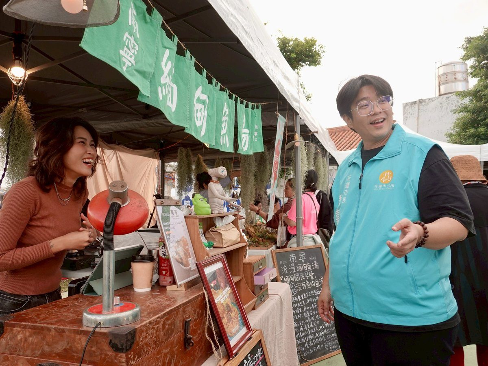

大陳X希柏市集14日登場 尋味海島故事體驗祈福手作

可樂電子報小編/編輯
花蓮市公所11月14日將在大陳一村社區廣場舉辦「裊裊馨香繫海島·尋味大陳逛好市」活動，透過「大陳X希柏市集」集結27個特色攤位，搭配社區演出、文化導覽及祈福手作，邀請大家週末走進大陳一村，逛市集、品美食，也聽聽海島的故事。

本次活動為115年大陳文化節系列活動之一，由花蓮縣政府指導、花蓮市公所與花蓮市民代表會主辦、大陳一村社區發展協會協辦。活動將大陳居民熟悉的家鄉滋味與特色品牌結合，讓民眾從日常飲食與生活體驗出發，認識大陳人在花蓮落地生根、延續傳統的故事。
「大陳X希柏市集」攤位涵蓋特色餐食、咖啡甜點、農產與文創手作，將提供多元的尋味選擇。民眾除了挑選喜愛的美食與手作，也能與攤主交流，發掘藏在料理與作品背後的生活故事。
活動另規劃大陳在地合唱團以傳統語言演出，以及社區媽媽舞蹈表演，展現居民的熱情與活力，同時還將邀請大陳耆老於大陳故事館進行文化導覽，帶領民眾透過鄉音與記憶，認識聚落的發展歷程，讓週末小旅行增添文化深度。

喜歡動手創作的民眾，也可關注「花綻神殿－祈福小禮花」與「平安香囊」DIY體驗。活動將引導參與者搭配花材、製作祈福小禮花，或運用草本香料完成香囊，把對家人平安的祝願融入作品，透過手作感受大陳居民的信仰與生活文化。

（圖／花蓮市公所提供，本文所附活動相片均為往年活動現場之資料圖片）
🌟 掌握花蓮在地第一手資訊・歡迎訂閱追蹤
深度紀實報導、在地精采影音專題，第一時間接收最新消息！